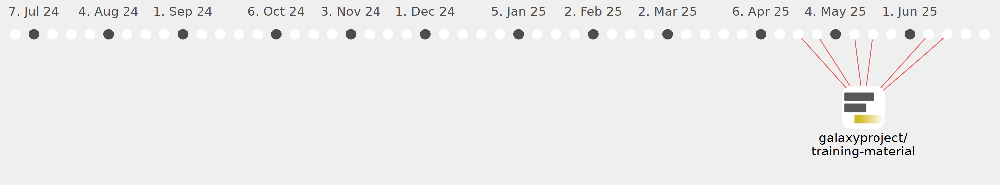

scorreard

Commits all-time: 81
Commits last year: 81

(81)
- 04fc063
- cfb9b41
- 46b92eb
- 2dee381
- 82a0212
- cb9754b
- 4118fd6
- e23268b
- e953302
- cbfdb5f
- 60b2d8e
- ddc376a
- 7650468
- 528dca2
- 65d09f7
- 74ccdff
- b9159f5
- c136ef4
- eb3e7a9
- b4b0a28
- 9200547
- 9830bb0
- a1176b6
- a671828
- 98bd4cc
- 0af1313
- be869f3
- de34290
- 846ceac
- 26dd756
- 4db308c
- b00c439
- 8ea8173
- 1315280
- 2f78840
- efbc12a
- a5804c6
- ec0b006
- db7423b
- 61dcd63
- adde83c
- 7ee07c7
- 8bc978d
- 72e019d
- 65629ee
- 86cdc4d
- c526c2c
- 2949fde
- fb31c70
- cd4ac1f
- 2aba5bb
- 0046dec
- 046d7ff
- cb824de
- e3e9ad1
- 90da078
- 78a6ee1
- 9fc197b
- f4a401a
- e148bdf
- 9b211f9
- a0157e1
- fd27673
- e0b9629
- 223d551
- 98b1135
- b73505e
- 9ebe066
- 1f41b80
- 08f30fd
- 66b4f7f
- 8f3ce5b
- 74a7c2e
- 7573b19
- 5f86ddf
- 8648bd6
- 92883b6
- d2d1c70
- 4f70958
- ab5adbb
- 71be527